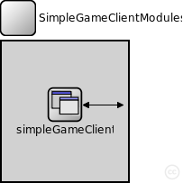
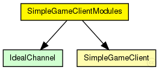
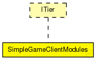

This documentation is released under the Creative Commons license
This documentation is released under the Creative Commons license(no description)
The following diagram shows usage relationships between types. Unresolved types are missing from the diagram. Click here to see the full picture.
The following diagram shows inheritance relationships for this type. Unresolved types are missing from the diagram. Click here to see the full picture.
| Name | Direction | Size | Description |
|---|---|---|---|
| udpIn | input |
gate from the UDP layer |
|
| from_lowerTier | input |
gate from the lower tier |
|
| from_upperTier | input |
gate from the upper tier |
|
| trace_in | input |
gate for trace file commands |
|
| tcpIn | input |
gate from the TCP layer |
|
| tcpOut | output |
gate to the TCP layer |
|
| udpOut | output |
gate to the UDP layer |
|
| to_lowerTier | output |
gate to the lower tier |
|
| to_upperTier | output |
gate to the upper tier |
| Name | Type | Default value | Description |
|---|---|---|---|
| simpleGameClient.rpcUdpTimeout | double |
default timeout value for direct RPCs |
|
| simpleGameClient.rpcKeyTimeout | double |
default timeout value for routed RPCs |
|
| simpleGameClient.optimizeTimeouts | bool |
calculate timeouts from measured RTTs and network coordinates |
|
| simpleGameClient.rpcExponentialBackoff | bool |
if true, doubles the timeout for every retransmission |
|
| simpleGameClient.debugOutput | bool |
enable debug output |
|
| simpleGameClient.movementRate | double |
movement updates per second |
|
| simpleGameClient.areaDimension | double |
movement range from [0.0, 0.0] to [areaDimension, areaDimension] |
|
| simpleGameClient.useScenery | bool |
generate scenery for simulated area (very slow for large areas, should be false except when used with realworld/simplecraft) |
|
| simpleGameClient.movementSpeed | double |
movement speed in m/s |
|
| simpleGameClient.movementGenerator | string |
responsible for different movement models (randomRoaming, groupRoaming, greatGathering, realWorldRoaming) |
|
| simpleGameClient.groupSize | int |
clients per group |
|
| simpleGameClient.mtu | int |
maximum transmission unit |
module SimpleGameClientModules like ITier { gates: input udpIn; // gate from the UDP layer input from_lowerTier; // gate from the lower tier input from_upperTier; // gate from the upper tier input trace_in; // gate for trace file commands input tcpIn; // gate from the TCP layer output tcpOut; // gate to the TCP layer output udpOut; // gate to the UDP layer output to_lowerTier; // gate to the lower tier output to_upperTier; // gate to the upper tier submodules: simpleGameClient: SimpleGameClient; connections allowunconnected: from_lowerTier --> simpleGameClient.from_lowerTier; to_lowerTier <-- simpleGameClient.to_lowerTier; trace_in --> simpleGameClient.trace_in; }
This documentation is released under the Creative Commons license